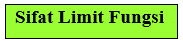
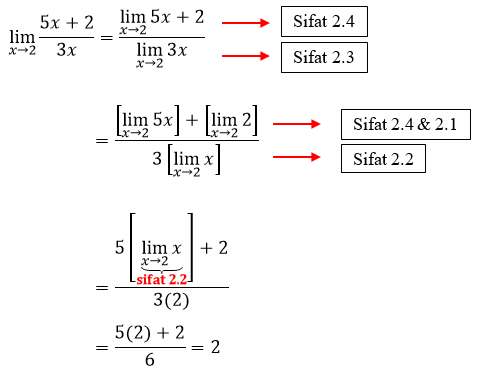
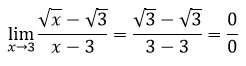
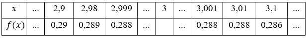
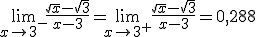
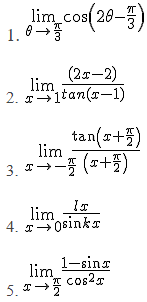

3.1 Menentukan Nilai Limit Fungsi Aljabar untuk x mendekati c, c ∈ R
Terdapat beberapa cara yang digunakan dalam menentukan nilai limit fungsi aljabar untuk x mendekati c, c selain menggunakan cara numerik dan sifat limit fungsi, diantaranya yaitu dengan mensubstitusi x = c, memfaktorkan dan mengalikan dengan faktor sekawan. Namun, saat mensubstitusi x = c fungsi dapat terdefinisi di x = c dan dapat juga tidak terdefinisi di x = c. Saat fungsi tidak terdefinisi di x = c maka nilai f(c) akan memiliki bentuk tak tentu seperti , berikut beberapa contohnya.
|
Tentukan nilai dari Penyelesaian:
Saat kita mensubstitusi x = 2, diperoleh nilai , sehingga nilai terdefinisi saat x = 2.
 berbentuk dengan , sehingga berdasarkan 2.6 maka .  Tabel 3.1. Nilai dari Berdasarkan tabel diatas nilai , sehingga |
|
Tentukan nilai dari Penyelesaian:
 Dengan mensubstitusi x = 3 ke diperoleh hasil yang merupakan bentuk tak tentu, sehingga nilai tidak terdefinisi di x = 3. Sekarang kita coba menggunakan sifat limit fungsi dan cara numerik seperti sebelumnya, apakah akan menghasilkan hasil yang sama?
berbentuk dimana , sedangkan berdasarkan sifat 2.6 dengan . Sehingga tidak dapat diselesaikan dengan menggunakan sifat limit fungsi. Tabel 3.2. Nilai dari  Berdasarkan tabel diatas nilai , sehingga berdasarkan definisi nilai . Dengan menggunakan cara substitusi diperoleh hasil yang merupakan bentuk tak tentu, sedangkan dengan cara numerik diperoleh hasil 0,288. Apabila diperoleh hasil bentuk tak tentu , selain menggunakan cara numerik dapat juga diselesaikan dengan cara berikut.
|
|
Tentukan nilai dari Penyelesaian:
Dengan mensubstitusi x = 0 ke diperoleh hasil yang merupakan bentuk tak tentu, sehingga nilai tidak terdefinisi di x = 0. Sekarang kita coba menggunakan sifat limit fungsi dan cara numerik seperti sebelumnya, apakah akan menghasilkan hasil yang sama?
berbentuk dimana , sedangkan berdasarkan sifat 2.6 dengan . Sehingga tidak dapat diselesaikan dengan menggunakan sifat limit fungsi.
Tabel 3.3. Nilai dari Berdasarkan tabel diatas nilai dari . Sehingga berdasarkan definisi nilai . Dengan menggunakan cara substitusi fungsi diperoleh hasil yang merupakan bentuk tak tentu, sedangkan dengan cara numerik diperoleh hasil 0,25. Apabila nilai pada diperoleh hasil bentuk tak tentu serta f(x) dan g(x) tidak memiliki hubungan jika difaktorkan, maka selain menggunakan cara numerik dapat juga diselesaikan dengan cara berikut.
|
Kerjakan soal berikut pada buku latihanmu!

Tentukan nilai limit untuk x mendekati c, c berikut!
1.
2.
3.
4.
5. 
1. Cara Substitusi

2. Cara Memfaktorkan
3. Cara Mefaktorkan

4. Perkalian Sekawan
5. Cara Memfaktorkan